공조냉동기계기사(구) (2021-05-15 기출문제)
1과목: 기계열역학
1. 4kg의 공기를 온도 15℃에서 일정 체적으로 가열하여 엔트로피가 3.35kJ/K 증가하였다. 이 때 온도는 약 몇 K인가? (단, 공기의 정적비열은 0.717kJ/(kgㆍK)이다.
- 927
- 337
- 533
- 483
(정답률: 47%)

2. 카르노사이클로 작동되는 열기관이 200kJ의 열을 200℃에서 공급받아 20℃에서 방출한다면 이 기관의 일은 약 얼마인가?
- 38kJ
- 54kJ
- 63kJ
- 76kJ
(정답률: 51%)
3. 기체상수가 0.462kJ/(kgㆍK)인 수증기를 이상기체로 간주할 때 정압비열 (kJ/(kgㆍK)은 약 얼마인가? (단, 이 수증기의 비열비는 1.33이다.)
- 1.86
- 1.54
- 0.64
- 0.44
(정답률: 45%)
4. 다음 4가지 경우에서 ( )안의 물질이 보유한 엔트로피가 증가한 경우는?
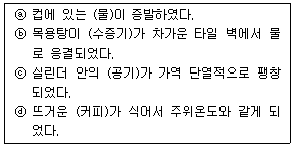
- ⓐ
- ⓑ
- ⓒ
- ⓓ
(정답률: 57%)
5. 이상적인 오토사이클의 열효율이 56.5%이라면 압축비는 약 얼마인가? (단, 작동 유체의 비열비는 1.4로 일정하다.)
- 7.5
- 8.0
- 9.0
- 9.5
(정답률: 57%)
6. 시스템 내의 임의의 이상기체 1kg이 채워져 있다. 이 기체의 정압비열은 1.0kJ/(kgㆍK)이고, 초기 온도가 50℃인 상태에서 323kJ의 열량을 가하여 팽창시킬 때 변경 후 체적은 변경 전 체적의 약 몇 배가 되는가? (단, 정압과정으로 팽창한다.)
- 1.5배
- 2배
- 2.5배
- 3배
(정답률: 60%)
7. 그림과 같은 Rankine 사이클의 열효율은 약 얼마인가? (단, h는 엔탈피, s는 엔트로피를 나타내며, h1=191.8kJ/kg, h2=193.8kJ/kg, h3=2799.5kJ/kg, h4=2007.5kJ/kg이다.)
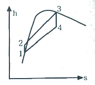
- 30.3%
- 36.7%
- 42.9%
- 48.1%
(정답률: 55%)
8. 복사열을 방사하는 방사율과 면적이 같은 2개의 방열판이 있다. 각각의 온도가 A방열판은 120℃, B방열판은 80℃일 때 두 방열판의 복사 열전달량(QA/QB)비는?
- 1.08
- 1.22
- 1.54
- 2.42
(정답률: 47%)
9. 질량이 5kg인 강제 용기 속에 물이 20L들어있다. 용기와 물이 24℃인 상태에서 이속에 질량이 5kg이고 온도가 180℃인 어떤 물체를 넣었더니 일정 시간 후 온도가 35℃가 되면서 열평형에 도달하였다. 이 때 이 물체의 비열은 약 몇 kJ/(kgㆍK), 강의 비열은 0.46kJ/(kgㆍK)이다.)
- 0.88
- 1.12
- 1.31
- 1.86
(정답률: 37%)
10. 어느 왕복동 내연기관에서 실린더 안지름이 6.8cm, 행정이 8cm일 때 평균유효압력은 1200kPa이다. 이 기관의 1행정당 유효 일은 약 몇 kJ인가?
- 0.09
- 0.15
- 0.35
- 0.48
(정답률: 42%)
11. 실린더에 밀폐된 8kg의 공기가 그림과 같이 압력 P1=800kPa, 체적 V1=0.27m3에서 P2=350kPa, V2=0.80m3으로 직선 변화하였다. 이 과정에서 공기가 한 일은 약 몇 kJ인가?
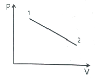
- 3⑤
- 334
- 362
- 390
(정답률: 51%)
12. 상태 1에서 경로 A를 따라 상태 2로 변화하고 경로 B를 따라 다시 상태 1로 돌아오는 가역 사이클이 있다. 아래의 사이클에 대한 설명으로 틀린 것은?
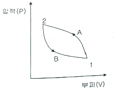
- 사이클 과정 동안 시스템의 내부에너지 변화량은 0 이다.
- 사이클 과정 동안 시스템은 외부로부터 순(net) 일을 받았다.
- 사이클 과정 동안 시스템의 내부에서 외부로 순(net) 열이 전달되었다.
- 이 그림으로 사이클 과정 동안 총 엔트로피 변화량을 알 수 없다.
(정답률: 46%)
13. 보일러, 터빈, 응축기, 펌프로 구성되어 있는 증기원동소가 있다. 보일러에서 2500kW의 열이 발생하고 터빈에서 550kW의 일을 발생시킨다. 또한, 펌프를 구동하는데 20kW의 동력이 추가로 소모된다면 응축기에서의 방열량은 약 몇 kW인가?
- 980
- 1930
- 1970
- 3070
(정답률: 35%)
14. 유리창을 통해 실내에서 실외로 열전달이 일어난다. 이때 열전달이 일어난다. 이때 열전달량은 약 몇 W인가? (단, 대류열전달계수는 50W/m2ㆍK), 유리창 표면온도는 25℃, 외기온도는 10℃, 유리창면적은 2m2이다.)
- 150
- 500
- 1500
- 5000
(정답률: 55%)
15. 냉동기 냉매의 일반적인 구비조건으로서 적합하지 않은 것은?
- 임계 온도가 높고, 응고 온도가 낮을 것
- 증발열이 작고, 증기의 비체적이 클 것
- 증기 및 액체의 점성(점성계수)이 작을 것
- 부식성이 없고, 안정성이 있을 것
(정답률: 60%)
16. 완전히 단열된 실린더 안의 공기가 피스톤을 밀어 외부로 일을 하였다. 이 때 외부로 행한일의 양과 동일한 값(절대값 기준)을 가지는 것은?
- 공기의 엔탈피 변화량
- 공기의 온도 변화량
- 공기의 엔트로피 변화량
- 공기의 내부에너지 변화량
(정답률: 47%)
17. 오토 사이클로 작동되는 기관에서 실린더의 극간 체적(clearance volume)이 행정체적(stroke volume)의 15%라고 하면 이론 열효율은 약 얼마인가? (단, 비열비 k=1.4이다.)
- 39.3%
- 45.2%
- 50.6%
- 55.7%
(정답률: 40%)
18. 열역학 제 2법칙과 관계된 설명으로 가장 옳은 것은?
- 과정(상태변화)의 방향성을 제시한다.
- 열역학적 에너지의 양을 결정한다.
- 열역학적 에너지의 종류를 판단한다.
- 과정에서 발생한 총 일의 양을 결정한다.
(정답률: 55%)
19. 압력 100kPa, 온도 20℃인 일정량의 이상기체가 있다. 압력을 일정하게 유지하면서 부피가 처음 부피의 2배가 되었을 때 기체의 온도는 약 몇 ℃가 되는가?
- 148
- 256
- 313
- 586
(정답률: 48%)
20. 어떤 열기관이 550K의 고열원으로부터 20kJ의 열량을 공급받아 250K의 저열원에 14kJ의 열량을 방축할 때 이 사이클의 Clausius 적분값과 가역, 비가역 여부의 설명으로 옳은 것은?
- Clausius 적분값은 –0.0196kJ/K 이고 가역 사이클이다.
- Clausius 적분값은 –0.0196kJ/K 이고 비가역 사이클이다.
- Clausius 적분값은 0.0196kJ/K 이고 가역 사이클이다.
- Clausius 적분값은 0.0196kJ/K 이고 비가역 사이클이다.
(정답률: 44%)
2과목: 냉동공학
21. 냉각탑에 대한 설명으로 틀린 것은?
- 밀폐식은 개방식 냉각탑에 비해 냉각수가 외기에 의해 오염될 염려가 적다.
- 냉각탑의 성능은 입구공기의 습구온도에 영향을 받는다.
- 쿨링 레인지는 냉각탑의 냉각수 입ㆍ출구 온도의 차이다.
- 어프로치는 냉각탑의 냉각수 입구온도에서 냉각탑 입구공기의 습구온도의 차이다.
(정답률: 59%)
22. 다음 압축과 관련한 설명으로 옳은 것은?
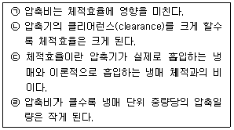
- ㉠, ㉣
- ㉠, ㉢
- ㉡, ㉣
- ㉡, ㉢
(정답률: 55%)
23. 몰리에르 선도 상에서 표준 냉동사이클의 냉매 상태 변화에 대한 설명으로 옳은 것은?
- 등엔트로피 변화는 압축과정에서 일어난다.
- 등엔트로피 변화는 증발과정에서 일어난다.
- 등엔트로피 변화는 팽창과정에서 일어난다.
- 등엔트로피 변화는 응축과정에서 일어난다.
(정답률: 47%)
24. 흡수식 냉동기에서 냉매의 과냉 원인으로 가장 거리가 먼 것은?
- 냉수 및 냉매량 부족
- 냉각수 부족
- 증발기 전열면적 오염
- 냉매에 용액이 혼입
(정답률: 50%)
25. 흡수식 냉동기에 사용하는 “냉매-흡수제”가 아닌 것은?
- 물 – 리튬 브로마이드
- 물 - 염화리튬
- 물 - 에틸렌글리콜
- 암모니아 – 물
(정답률: 50%)
26. 냉동장치의 냉매량이 부족할 때 일어나는 현상으로 옳은 것은?
- 흡입압력이 낮아진다.
- 토출압력이 높아진다.
- 냉동능력이 증가한다.
- 흡입압력이 높아진다.
(정답률: 46%)
27. 펠티에(Feltier) 효과를 이용하는 냉동방법에 대한 설명으로 틀린 것은?
- 펠티에 효과를 냉동에 이용한 것이 전자냉동 또는 열전기식 냉동법이다.
- 펠티에 효과를 냉동법으로 실용화에 어려운 점이 많았으나 반도체 기술이 발달하면서 실용화되었다.
- 펠티에 효과가 적용된 냉동방법은 휴대용 냉장고, 가정용 특수냉장고, 물 냉각기, 핵 잠수함 내의 냉난방장치 등에 사용된다.
- 증기 압축식 냉동장치와 마찬가지로 압축기, 응축기, 증발기 등을 이용한 것이다.
(정답률: 65%)
28. 압축기의 기통수가 6기통이며, 피스톤 직경이 140mm, 행정이 110mm, 회전수가 800rpm인 NH3 표준 냉동사이클의 냉동능력(kW)은? (단, 압축기의 체적효율은 0.75, 냉동효과는 1126.3kJ/kg, 비체적은 0.5m3/kg이다.)
- 122.7
- 148.3
- 193.4
- 228.9
(정답률: 36%)
29. 증기압축식 냉동장치에 관한 설명으로 옳은 것은?
- 증발식 응축기에서는 대기의 습구온도가 저하하면 고압압력은 통상의 운전압력보다 높게 된다.
- 압축기의 흡입압력이 낮게 되면 토출압력도 낮게 되어 냉동능력이 증대한다.
- 언로더 부착 압축기를 사용하면 급격하게 부하가 증가하여도 액백현상을 막을 수 있다.
- 액배관에 플래시 가스가 발생하면 냉매 순환량이 감소되어 증발기의 냉동능력이 저하된다.
(정답률: 59%)
30. 증기 압축식 냉동사이클에서 증발온도를 일정하게 유지시키고, 응축온도를 상승시킬 때 나타나는 현상이 아닌 것은?
- 소요동력 증가
- 성적계수 감소
- 토출가스 온도 상승
- 플래시 가스 발생량 감소
(정답률: 60%)
31. 2단압축 1단팽창 냉동장치에서 게이지 압력계로 증발압력 0.19MPa, 응축압력 1.17MPa일 때, 중간냉각기의 절대압력(MPa)은?
- 2.166
- 1.166
- 0.608
- 0.409
(정답률: 38%)
32. 냉동장치의 운전 중 장치 내에 공기가 침입하였을 때 나타나는 현상으로 옳은 것은?
- 토출가스 압력이 낮게 된다.
- 모터의 암페어가 적게 된다.
- 냉각 능력에는 변화가 없다.
- 토출가스 온도가 높게 된다.
(정답률: 56%)
33. 2단 압축 냉동기에서 냉매의 응축온도가 38℃일 때 수냉식 응축기의 냉각수 입ㆍ출구의 온도가 각각 30℃, 35℃이다. 이 때 냉매와 냉각수와의 대수평균온도차(℃)는?
- 2
- 5
- 8
- 10
(정답률: 55%)
34. 냉동장치에서 흡입가스의 압력을 저하시키는 원인으로 가장 거리가 먼 것은?
- 냉매 유량의 부족
- 흡입배관의 마찰손실
- 냉각부하의 증가
- 모세관의 막힘
(정답률: 45%)
35. 다음 중 열통과율이 가장 작은 응축기 형식은? (단, 동일 조건 기준으로 한다.)
- 7통로식 응축기
- 입형 셸 튜브식 응축기
- 공냉식 응축기
- 2중관식 응축기
(정답률: 59%)
36. 고온 35℃, 저온 –10℃에서 작동되는 역카르노 사이클이 적용된 이론 냉동사이클의 성적계수는?
- 2.8
- 3.2
- 4.2
- 5.8
(정답률: 55%)
37. 제빙에 필요한 시간을 구하는 공식이 아래와 같다. 이 공식에서 a와 b가 의미하는 것은?
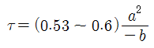
- a: 브라인온도, b: 결빙두께
- a: 결빙두께, b: 브라인유량
- a: 결빙두께, b: 브라인온도
- a: 브라인유량, b: 결빙두께
(정답률: 54%)
38. 브라인 냉각용 증발기가 설치된 소형 냉동기가 있다. 브라인 순환량이 20kg/min이고, 브라인의 입ㆍ출구 온도차는 15K이다. 압축기의 실제 소요동력이 5.6kW일 때, 이 냉동기의 실제 성적계수는? (단, 브라인의 비열은 3.3kJ/kgㆍK이다.)
- 1.82
- 2.18
- 2.94
- 3.31
(정답률: 51%)
39. 그림에서 사이클 A(1-2-3-4-1)로 운전될 때 증발기의 냉동능력은 5RT, 압축기의 체적효율은 0.78이었다. 그러나 운전 중 부하가 감소하여 압축기 흡입밸브 개도를 줄여서 운전하였더니 사이클 B(1‘-2’-3-4-1-1‘)로 되었다. 사이클 B로 운전될 때의 체적효율이 0.7이라면 이 때의 냉동능력(RT)은 얼마인가? (단, 1RT는 3.8kW이다.)
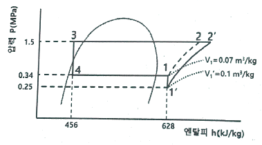
- 1.37
- 2.63
- 2.94
- 3.14
(정답률: 31%)
40. 직경 10cm, 길이 5m의 관에 두께 5cm의 보온재(열전도율 λ=0.1163W/mㆍK)로 보온을 하였다. 방열층의 내측과 외측의 온도가 각각 –50℃, 30℃이라면 침입하는 전열량(W)은?
- 133.4
- 248.8
- 362.6
- 421.7
(정답률: 22%)
3과목: 공기조화
41. 보일러의 수위를 제어하는 주된 목적으로 가장 적절한 것은?
- 보일러의 급수장치가 동결되지 않도록 하기 위하여
- 보일러의 연료공급이 잘 이루어지도록 하기 위하여
- 보일러가 과열로 인해 손상되지 않도록 하기 위하여
- 보일러에서의 출력을 부하에 따라 조절하기 위하여
(정답률: 54%)
42. 열매에 따른 방열기의 표준방열량(W/m2)기준으로 가장 적절한 것은?
- 온수:4⑤.2, 증기:822.3
- 온수:523.3, 증기:822.3
- 온수:4⑤.2, 증기:755.8
- 온수:523.3, 증기:755.8
(정답률: 47%)
43. 에어와셔 내에 온수를 분무할 때 공기는 습공기선도에서 어떠한 변화과정이 일어나는가?
- 가습ㆍ냉각
- 과냉각
- 건조ㆍ냉각
- 감습ㆍ과열
(정답률: 58%)
44. 보일러의 발생증기를 한 곳으로만 취출하면 그 부근에 압력이 저하하여 수면동요 현상과 동시에 비수가 발생된다. 이를 방지하기 위한 장치는?
- 급수내관
- 비수방지관
- 기수분리기
- 인젝터
(정답률: 60%)
45. 복사난방 방식의 특징에 대한 설명으로 틀린 것은?
- 실내에 방열기를 설치하지 않으므로 바닥이나 벽면을 유용하게 이용할 수 있다.
- 복사열에 의한 난방으로써 쾌감도가 크다.
- 외기온도가 갑자기 변하여도 열용량이 크므로 방열량의 조정이 용이하다.
- 실내의 온도 분포가 균일하며, 열이 방의 윗 쪽으로 빠지지 않으르모 경제적이다.
(정답률: 53%)
46. 다음 중 난방부하를 경감시키는 요인으로만 짝지어진 것은?
- 지붕을 통한 전도 열량, 태양열의 일사부하
- 조명부하, 틈새바람에 의한 부하
- 실내기구부하, 재실인원의 발생열량
- 기기(덕트 등) 부하, 외기부하
(정답률: 39%)
47. 온수난방의 특징에 대한 설명으로 틀린 것은?
- 증기난방에 비하여 연료소비량이 적다.
- 예열시간은 길지만 잘 식지 않으므로 증기난방에 비하여 배관의 동결 피해가 적다.
- 보일러 취급이 증기보일러에 비해 안전하고 간단하므로 소규모 주택에 적합하다.
- 열용량이 크기 때문에 짧은 시간에 예열할 수 있다.
(정답률: 59%)
48. 콜드 드래프트 현상의 발생 원인으로 가장 거리가 먼 것은?
- 인체 주위의 공기온도가 너무 낮을 때
- 기류의 속도가 낮고 습도가 높을 때
- 주위 벽면의 온도가 낮을 때
- 겨울에 창문의 극간풍이 많을 때
(정답률: 59%)
49. 다음과 같이 단열된 덕트 내에 공기가 통하고 이것에 열량 Q(kJ/h)와 수분L(kg/h)을 가하여 열평형이 이루어 졌을 때, 공기에 가해진 열량(Q)은 어떻게 나타내는가? (단, 공기의 유량은 G(kg/h), 가열코일 입ㆍ출구의 엔탈피, 절대습도를 각각 h1, h2(kJ/kg), x1, x2(kg/kg)이며, 수분의 엔탈피는 hL(kJ/kg)이다.)
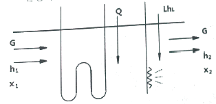
- G(h2-h1)+LhL
- G(x2-x1)+LhL
- G(h2-h1)-LhL
- G(x2-x1)-LhL
(정답률: 44%)
50. 대기압(760mmHg)에서 온도 28℃, 상대습도 50%인 습공기 내의 건공기 분압(mmHg)은 얼마인가? (단, 수증기 포화압력은 31.84mmHg이다.)
- 16
- 32
- 372
- 744
(정답률: 28%)
51. 단일덕트 재열방식의 특징에 관한 설명으로 옳은 것은?
- 부하 패턴이 다른 다수의 실 또는 존의 공조에 적합하다.
- 식당과 같이 잠열부하가 많은 곳의 공조에는 부적합하다.
- 전수방식으로서 부하변동이 큰 실이나 존에서 에너지 절약형으로 사용된다.
- 시스템의 유지ㆍ보수 면에서는 일반 단일덕트에 비해 우수하다.
(정답률: 31%)
52. 온풍난방에서 중력식 순환방식과 비교한 강제 순환방식의 특징에 관한 설명으로 틀린 것은?
- 기기 설치장소가 비교적 자유롭다.
- 급기 덕트가 작아서 은폐가 용이하다.
- 공급되는 공기는 필터 등에 의하여 깨끗하게 처리될 수 있다.
- 공기순환이 어렵고 쾌적성 확보가 곤란하다.
(정답률: 57%)
53. 건구온도 30℃, 절대습도 0.01kg/kg인 외부공기 30%와 건구온도 20℃, 절대습도 0.02kg/kg인 실내공기 70%를 혼합하였을 때 최종 건구온도(T)와 절대습도(x)는 얼마인가?
- T=23℃, x=0.017kg/kg
- T=27℃, x=0.017kg/kg
- T=23℃, x=0.013kg/kg
- T=27℃, x=0.013kg/kg
(정답률: 45%)
54. 가변풍량 방식에 대한 설명으로 틀린 것은?
- 부분부하 대응으로 송풍기 동력이 커진다.
- 시운전 시 토출구의 풍량조정이 간단하다.
- 부하변동에 대해 제어응답이 빠르므로 거주성이 향상된다.
- 동시 부하율을 고려하여 설비용량을 적게 할 수 있다.
(정답률: 51%)
55. 다음 그림과 같이 송풍기의 흡입 측에만 덕트가 연결되어 있을 경우 동압(mmAq)은 얼마인가?
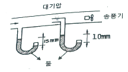
- 5
- 10
- 15
- 25
(정답률: 43%)
56. 건구온도 10℃, 절대습도 0.003kg/kg인 공기 50m3을 20℃까지 가열하는데 필요한 열량(kJ)은? (단, 공기의 정압비열은 1.01kJ/kgㆍK, 공기의 밀도는 1.2kg/m3이다.)
- 425
- 606
- 713
- 884
(정답률: 46%)
57. 내부에 송풍기와 냉ㆍ온수 코일이 내장되어 있으며, 각 실내에 설치되어 기계실로부터 냉ㆍ온수를 공급받아 실내공기의 상태를 직접 조절하는 공조기는?
- 패키지형 공조기
- 인덕션 유닛
- 팬코일 유닛
- 에어핸드링 유닛
(정답률: 57%)
58. 취출구 관련 용어에 대한 설명으로 틀린 것은?
- 장방형 취출구의 긴 변과 짧은 변의 비를 아스펙트비라 한다.
- 취출구에서 취출된 공기를 1차 공기라 하고, 취출공기에 의해 유인되는 실내공기를 2차 공기라 한다.
- 취출구에서 취출된 공기가 진행해서 취출기류의 중심선상의 풍속이 1.5m/s로 되는 위치까지의 수평거리를 도달거리라 한다.
- 수평으로 취출된 공기가 어떤 거리를 진행했을 때 기류의 중심선과 취출구의 중심과의 거리를 강하도라 한다.
(정답률: 32%)
59. 극간풍의 방지방법으로 가장 적절하지 않은 것은?
- 회전문 설치
- 자동문 설치
- 에어 커튼 설치
- 충분한 간격의 이중문 설치
(정답률: 53%)
60. 취출온도를 일정하게 하여 부하에 따라 송풍량을 변화시켜 실온을 제어하는 방식은?
- 가변풍량방식
- 재열코일방식
- 정풍량방식
- 유인유닛방식
(정답률: 59%)
4과목: 전기제어공학
61. 100V용 전구 30W와 60W 두 개를 직렬로 연결하고 직류 100V 전원에 접속하였을 때 두 전구의 상태로 옳은 것은?
- 30W 전구가 더 밝다.
- 60W 전구가 더 밝다.
- 두 전구의 밝기가 모두 같다.
- 두 전구가 모두 켜지지 않는다.
(정답률: 50%)
62. 워드 레오나드 속도 제어방식이 속하는 제어 방법은?
- 저항제어
- 계자제어
- 전압제어
- 직병렬제어
(정답률: 40%)
63. 전동기의 회전방향을 알기 위한 법칙은?
- 렌츠의 법칙
- 암페어의 법칙
- 플레밍의 왼손법칙
- 플레밍의 오른손법칙
(정답률: 54%)
64. 지상 역률 80%, 1000kW의 3상 부하가 있다. 이것에 콘덴서를 설치하여 역률을 95%로 개선하려고 한다. 필요한 콘덴서의 용량(kvar)은 약 얼마인가?
- 421.3
- 633.3
- 844.3
- 1266.3
(정답률: 23%)
65. 3상 유도전동기의 주파수가 60Hz, 극수가 6극, 전부하 시 회전수가 1160rpm이라면 슬립은 약 얼마인가?
- 0.03
- 0.24
- 0.45
- 0.57
(정답률: 43%)
66. 저항에 전류가 흐르면 줄열이 발생하는데 저항에 흐르는 전류 I와 전력 P의 관계는?
- I ∝ P
- I ∝ P0.5
- I ∝ P1.5
- I ∝ P2
(정답률: 51%)
67. 입력신호 중 어느 하나가 “1”일 때 출력이 “0”이 되는 회로는?
- AND 회로
- OR 회로
- NOT 회로
- NOR 회로
(정답률: 45%)
68. 입력신호 x(t)와 출력신호 y(t)의 관계가
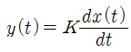
로 표현되는 것은 어떤 요소인가?- 비례요소
- 미분요소
- 적분요소
- 지연요소
(정답률: 48%)
69. 다음 조건을 만족시키지 못하는 회로는?
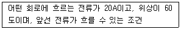
- RL병렬
- RC병렬
- RLC병렬
- RLC직렬
(정답률: 31%)
70. 다음 논리기호의 논리식은?
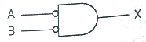
- X=A+B
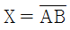
- X=AB
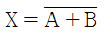
(정답률: 32%)
71. 콘덴서의 전위차와 축적되는 에너지와의 관게식을 그림으로 나타내면 어떤 그림이 되는가?
- 직선
- 타원
- 쌍곡선
- 포물선
(정답률: 42%)
72. 열전대에 대한 설명이 아닌 것은?
- 열전대를 구성하는 소선은 열기전력이 커야한다.
- 철, 콘스탄탄 등의 금속을 이용한다.
- 제벡효과를 이용한다.
- 열팽창 계수에 따른 변형 또는 내부 응력을 이용한다.
(정답률: 28%)
73. 전류계와 전압계는 내부저항이 존재한다. 이 내부저항은 전압 또는 전류를 측정하고자 하는 부하의 저항에 비하여 어떤 특성을 가져야 하는가?
- 내부저항이 전류계는 가능한 커야 하며, 전압계는 가능한 작아야 한다.
- 내부저항이 전류계는 가능한 커야 하며, 전압계도 가능한 커야 한다.
- 내부저항이 전류계는 가능한 작아야 하며, 전압계는 가능한 커야 한다.
- 내부저항이 전류계는 가능한 작아야 하며, 전압계도 가능한 작아야 한다.
(정답률: 41%)
74. 피드백제어에서 제어요소에 대한 설명 중 옳은 것은?
- 조작부와 검출부로 구성되어 있다.
- 동작신호를 조작량으로 변화시키는 요소이다.
- 제어를 받는 출력량으로 제어대상에 속하는 요소이다.
- 제어량을 주궤환 신호로 변화시키는 요소이다.
(정답률: 37%)
75. 제어량에 따른 분류 중 프로세스 제어에 속하지 않는 것은?
- 압력
- 유량
- 온도
- 속도
(정답률: 46%)
76. 다음 블록선도를 등가 합성 전달함수로 나타낸 것은?
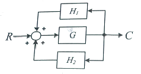
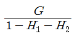
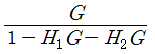
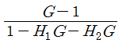
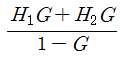
(정답률: 54%)
77. 다음 논리회로의 출력은?
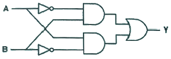
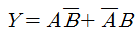
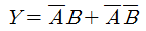
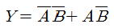
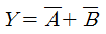
(정답률: 46%)
78. R1=100Ω, R2=1000Ω, R3=800Ω일 때 전류계의 지시가 0이 되었다. 이때 저항 R4는 몇 Ω인가?
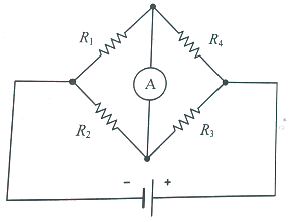
- 80
- 160
- 240
- 320
(정답률: 50%)
79. x2=ax1+cx3+bx4의 신호흐름 선도는?
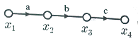
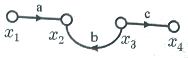
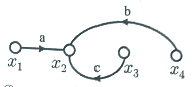
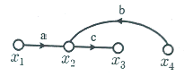
(정답률: 50%)
80. R, L, C가 서로 직렬로 연결되어 있는 회로에서 양단의 전압과 전류의 위상이 동상이 되는 조건은?
- ω=LC
- ω=L2C
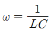
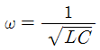
(정답률: 59%)
5과목: 배관일반
81. 배수 배관의 시공시 유의사항으로 틀린 것은?
- 배수를 가능한 천천히 옥외 하수관으로 유출할 수 있을 것
- 옥외 하수관에서 하수 가스나 쥐 또는 각종 벌레 등이 건물 안으로 침입하는 것을 방지할 수 있는 방법으로 시공할 것
- 배수관 및 통기관은 내구성이 풍부하여야 하며 가스나 물이 새지 않도록 기구 상호 간의 접합을 완벽하게 할 것
- 한랭지에서는 배수관이 동결되지 않도록 피복을 할 것
(정답률: 58%)
82. 배관설비 공사에서 파이프 래크의 폭에 관한 설명으로 틀린 것은?
- 파이프 래크의 실제 폭은 신규라인을 대비하여 계산된 폭보다 20%정도 크게 한다.
- 파이프 래크상의 배관밀도가 작아지는 부분에 대해서는 파이프 래크의 폭을 좁게 한다.
- 고온배관에서는 열팽창에 의하여 과대한 구속을 받지 않도록 충분한 간격을 둔다.
- 인접하는 파이프의 외측과 외측과의 최소 간격을 25mm로 하여 래크의 폭을 결정한다.
(정답률: 38%)
83. 공기조화 설비 중 복사난방의 패널형식이 아닌 것은?
- 바닥패널
- 천장패널
- 벽패널
- 유닛패널
(정답률: 55%)
84. 동관작업용 사이징 툴(sizing tool)공구에 관한 설명으로 옳은 것은?
- 동관의 확관용 공구
- 동관의 끝부분을 원형으로 정형하는 공구
- 동관의 끝을 나팔형으로 만드는 공구
- 동관 절단 후 생긴 거스러미를 제거하는 공구
(정답률: 49%)
85. 다음 중 신축 이음쇠의 종류로 가장 거리가 먼 것은?
- 벨로즈형
- 플랜지형
- 루프형
- 슬리브형
(정답률: 52%)
86. 공조설비에서 증기코일의 동결 방지 대책으로 틀린 것은?
- 외기와 실내 환기가 혼합되지 않도록 차단한다.
- 외기 댐퍼와 송풍기를 인터록 시킨다.
- 야간의 운전정지 중에도 순환 펌프를 운전한다.
- 증기코일 내에 응축수가 고이지 않도록 한다.
(정답률: 36%)
87. 동일 구경의 관을 직선 연결할 때 사용하는 관 이음재료가 아닌 것은?
- 소켓
- 플러그
- 유니온
- 플랜지
(정답률: 52%)
88. 강관의 용접 접합법으로 가장 적합하지 않은 것은?
- 맞대기용접
- 슬리브용접
- 플랜지용접
- 플라스틴용접
(정답률: 56%)
89. 하향 공급식 급탕 배관법의 구배방법으로 옳은 것은?
- 급탕관은 끝올림, 복귀관은 끝내림 구배를 준다.
- 급탕관은 끝내림, 복귀관은 끝올림 구배를 준다.
- 급탕관, 복귀관 모두 끝올림 구배를 준다.
- 급탕관, 복귀관 모두 끝내림 구배를 준다.
(정답률: 52%)
90. 보온재의 열전도율이 작아지는 조건으로 틀린 것은?
- 재료의 두께가 두꺼울수록
- 재료 내 기공이 작고 기공률이 클수록
- 재료의 밀도가 클수록
- 재료의 온도가 낮을수록
(정답률: 32%)
91. 캐비테이션(cavitation)현상의 발생 조건이 아닌 것은?
- 흡입양정이 지나치게 클 경우
- 흡입관의 저항이 증대될 경우
- 흡입 유체의 온도가 높은 경우
- 흡입관의 압력이 양압인 경우
(정답률: 52%)
92. 간접 가열식 급탕법에 관한 설명으로 틀린 것은?
- 대규모 급탕설비에 부적당하다.
- 순환증기는 높이에 관계 없이 저압으로 사용 가능하다.
- 저탕탱크와 가열용 코일이 설치되어 있다.
- 난방용 증기보일러가 있는 곳에 설치하면 설비비를 절약하고 관리가 편하다.
(정답률: 43%)
93. 온수배관에서 배관의 길이팽창을 흡수하기 위해 설치하는 것은?
- 팽창관
- 완충기
- 신축이음쇠
- 흡수기
(정답률: 49%)
94. 고온수 난방방식에서 넓은 지역에 공급하기 위해 사용되는 2차측 접속방식에 해당되지 않는 것은?
- 직결방식
- 브리드인방식
- 열교환방식
- 오리피스접합방식
(정답률: 38%)
95. 다음 중 열을 잘 반사하고 확산하여 방열기 표면 등의 도장용으로 사용하기에 가장 적합한 도료는?
- 광명단
- 산화철
- 합성수지
- 알루미늄
(정답률: 50%)
96. 수배관 사용 시 부식을 방지하기 위한 방법으로 틀린 것은?
- 밀폐 사이클의 경우 물을 가들 채우고 공기를 제거한다.
- 개방 사이클로 하여 순환수가 공기와 충분히 접하도록 한다.
- 캐비테이션을 일으키지 않도록 배관한다.
- 배관에 방식도장을 한다.
(정답률: 56%)
97. 다음 중 암모니아 냉동장치에 사용되는 배관재료로 가장 적합하지 않은 것은?
- 이음매 없는 동관
- 배관용 탄소강관
- 저온배관용 강관
- 배관용 스테인리스강관
(정답률: 55%)
98. 증기난방 배관시공에서 환수관에 수직 상향부가 필요할 때 리프트 피팅(lift fitting)을 써서 응축수가 위쪽으로 배출되게 하는 방식은?
- 단관 중력 환수식
- 복관 중력 환수식
- 진공 환수식
- 압력 환수식
(정답률: 52%)
99. 다음 보온재 중 안전사용(최고)온도가 가장 높은 것은? (단, 동일조건 기준으로 한다.)
- 글라스 울 보온판
- 우모펠트
- 규산칼슘 보온판
- 석면 보온판
(정답률: 35%)
100. 급수관의 유속을 제한(1.5~2m/s이하)하는 이유로 가장 거리가 먼 것은?
- 유속이 빠르면 흐름방향이 변하는 개소의 원심력에 의한 부압(-)이 생겨 캐비테이션이 발생하기 때문에
- 관 지름을 작게 할 수 있어 재료비 및 시공비가 절약되기 때문에
- 유속이 빠른 경우 배관의 마찰손실 및 관 내면의 침식이 커지기 때문에
- 워터해머 발생 시 충격압에 의해 소음, 진동이 발생하기 떄문에
(정답률: 54%)
ΔS = Q/T
여기서 Q는 열량, T는 절대온도이다. 따라서, 우리는 다음과 같은 식을 얻을 수 있다.
T = Q/ΔS
여기서 Q는 다음과 같이 구할 수 있다.
Q = mCΔT
여기서 m은 공기의 질량, C는 공기의 정적비열, ΔT는 온도 변화량이다. 따라서, 우리는 다음과 같은 식을 얻을 수 있다.
T = mCΔT/ΔS
질량 m은 4kg이고, 정적비열 C는 0.717kJ/(kgㆍK)이다. 또한, 엔트로피 변화량 ΔS는 3.35kJ/K이다. 따라서, 우리는 다음과 같은 식을 얻을 수 있다.
T = (4kg)(0.717kJ/(kgㆍK))(ΔT)/3.35kJ/K
이를 계산하면, T는 약 927K이다. 따라서, 정답은 "927"이다.